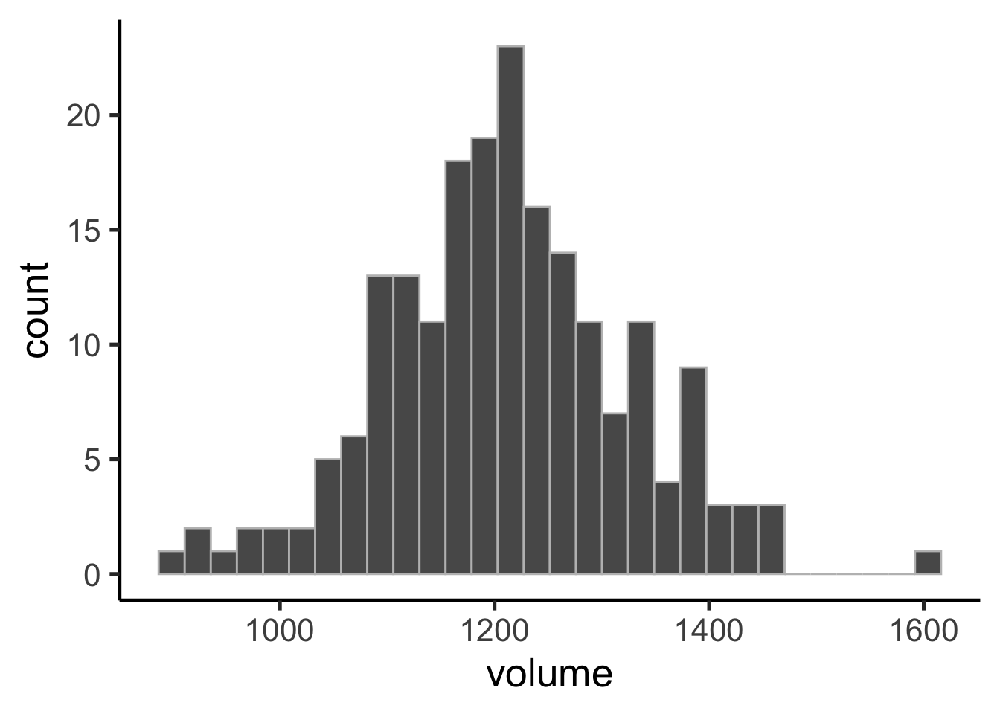
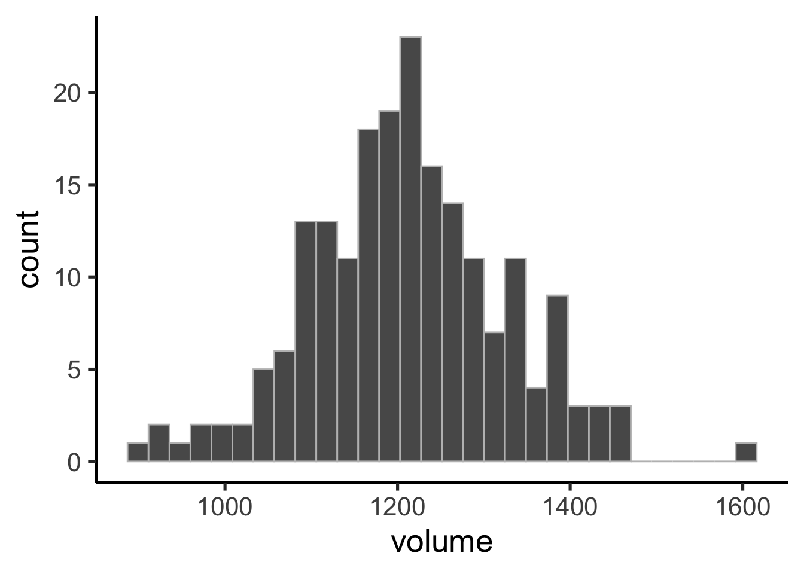
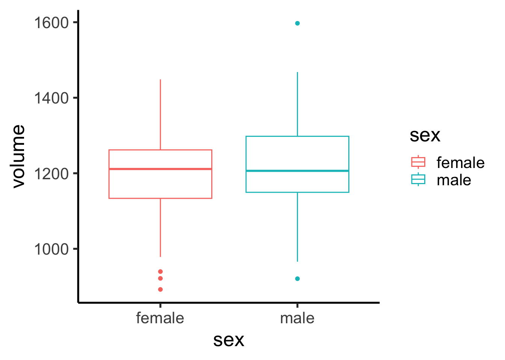
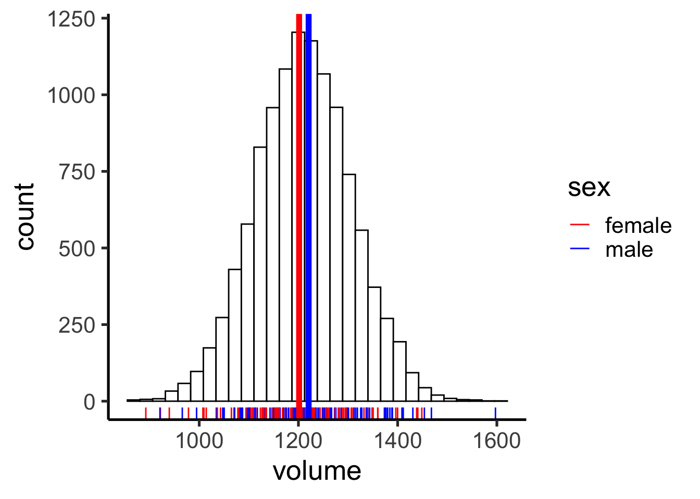
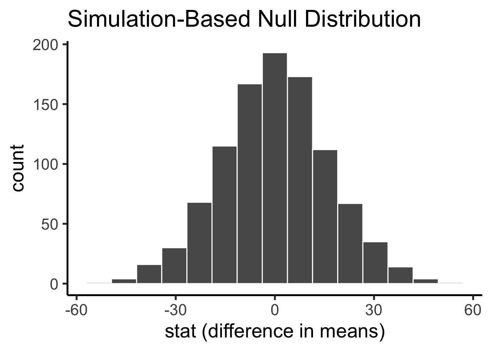
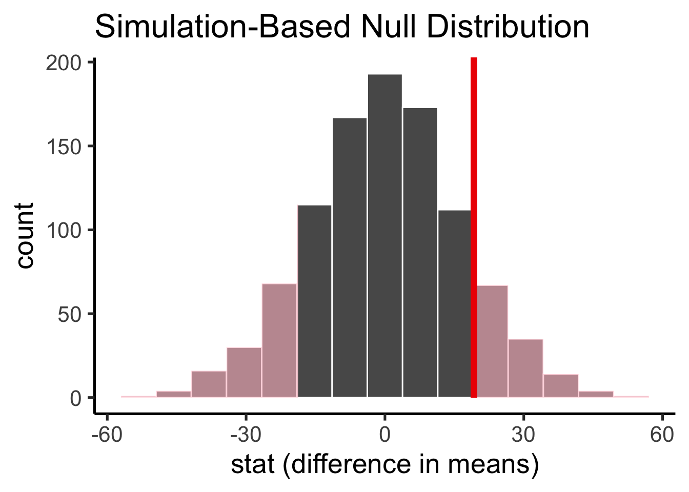
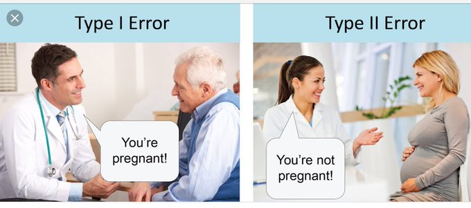

penn_sample %>%
ggplot(aes(x = volume)) +
geom_histogram(color = "gray")`stat_bin()` using `bins = 30`. Pick better value with `binwidth`.
Data Science for Studying Language and the Mind
There is a very high probability that I will borrow closely adapted questions from both lab and the practice exam
hereHypothesis testingWe explored brain volume
penn_sample %>%
ggplot(aes(x = volume)) +
geom_histogram(color = "gray")`stat_bin()` using `bins = 30`. Pick better value with `binwidth`.
Brain volume AND sex
A useful visualization for a categorical variable is a boxplot:
penn_sample %>%
ggplot(aes(y = volume, x = sex)) +
geom_boxplot(aes(color = sex))
Do the two sexes differ in mean brain volume?
obs_diff <- penn_sample %>%
specify(response = volume, explanatory = sex) %>%
calculate(stat = "diff in means", order = c("male", "female"))
obs_diffResponse: volume (numeric)
Explanatory: sex (factor)
# A tibble: 1 × 1
stat
<dbl>
1 19.2Sampling variability or true difference in means?
`stat_bin()` using `bins = 30`. Pick better value with `binwidth`.
To determine whether the brains of male and female Penn students differ with respect to the mean, we can use a framework for decision making called hypothesis testing.
We pose a null hypothesis for practical reasons: it is the hypothesis for which we can simulate data. We can construct the sampling distribution for a hypothetical world in which our observed value is due to chance (we call this the null distribution).

If the null hypothesis is true, how likely is our observed pattern of results?
. . .
null_distribution %>%
filter(abs(stat) > obs_diff$stat) %>%
summarise(p = n()/1000)# A tibble: 1 × 1
p
<dbl>
1 0.24Or infer can handle this for us with the get_p_value() function:
null_distribution %>%
get_p_value(obs_stat = obs_diff, direction = "both")# A tibble: 1 × 1
p_value
<dbl>
1 0.242Warning in (function (mapping = NULL, data = NULL, stat = "identity", position = "identity", : All aesthetics have length 1, but the data has 1000 rows.
ℹ Did you mean to use `annotate()`?
Finally, if the p-value is small enough — less than some threshold we decide upon — we reject the null hypothesis. By convention we consider a p-value less than 0.05 to be implausible enough that we can reject the null hypothesis.
Warning in (function (mapping = NULL, data = NULL, stat = "identity", position = "identity", : All aesthetics have length 1, but the data has 1000 rows.
ℹ Did you mean to use `annotate()`?
Note that obtaining our observed value is implausible under the null, but not impossible. In other words, our decision to reject (or not) could be wrong!

If you understand this framework, you can understand any hypothesis test (t-test, chi-squared, etc).

Remember from last week that there are two ways we can construct a sampling distribution (simulate data):
library(languageR)We can explore the relationship between two quantities visually with a scatter plot.
ratings %>%
ggplot(aes(x = Frequency, y = meanFamiliarity)) +
geom_point()
If there is no relationship between the variables, we say they are independent: knowing the value of one variable provides no information about the other variable.
. . .
If there is some relationship between the variables, we can consider two types:
One way to quantify linear relationships is with correlation (\(r\)). Correlation expresses the linear relationship as a range from -1 to 1, where -1 means the relationship is perfectly negative and 1 means the relationship is perfectly positive.

Correlation can be calculated by taking the z-score of each variable (a normalization technique in which we subtract the mean and divide by the standard deviation) and then computing the average product of each variable:
\(r=\frac{\sum_{i=1}^n (\frac{x_i - \bar{x}}{sd(x)})(\frac{y_i - \bar{y}}{sd(y)})}{n}\)
Or we can use R’s built in correlation function: cor(x,y)
cor(ratings$Frequency, ratings$meanFamiliarity)[1] 0.4820286Just like the mean — and all other test statistics! — \(r\) is subject to sampling variability. We can indicate our uncertainty around the correlation we observe in the same way we did for the mean last week: construct the sampling distribution of the correlation via bootstrapping and compute a confidence interval.
How do we test whether the correlation we observed in the data is significantly different from zero? We can use hypothesis testing (as learned today)! Here our null hypothesis that there is no relationship between the variables (they are independent).